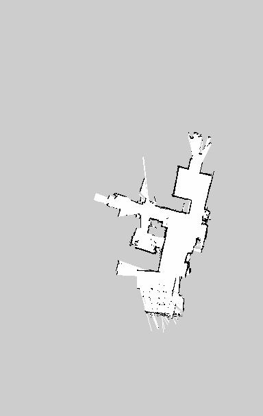

CAD
CAD01 / CAPSTONECompleted
Safety valve test platform
Fixture concepts and FEA, sheet-metal and frame modeling, sliding-enclosure integration, and on-site assembly.
Fixture concepts / Mechanical CAD / Assembly / Sep 2025 – May 2026I'm John, a mechanical engineering graduate student at Duke University. I work on mechanical design, fabrication, and the hardware interfaces that bring robotic systems together.
Seeking U.S. internships in mechanical engineering, robotics hardware, and systems integration.

Design decisions, physical hardware, and what I learned.
CADFixture concepts and FEA, sheet-metal and frame modeling, sliding-enclosure integration, and on-site assembly.
Fixture concepts / Mechanical CAD / Assembly / Sep 2025 – May 2026
INDOOR MAPPINGBringing up a Jetson-based robot, debugging odometry, and generating indoor maps.
Independent integration project / Jan – Aug 2026 PUBLIC TRANE COIL · REFERENCE
PUBLIC TRANE COIL · REFERENCEMechanical gripper workstream for a Duke–Trane robotic coil-assembly project: level grasping, clearance, and copper protection.
Mechanical gripper optimization / Sep 2026 – PresentA wearable insole for partial weight-bearing monitoring. My scope: sensor integration, hardware bring-up, and calibrated data.
Sensor integration & hardware bring-up / Sep 2026 – PresentI study Mechanical Engineering & Materials Science at Duke University. My undergraduate background in Industrial Design at Donghua University led me into CAD, structural analysis, fabrication, and hands-on assembly.
I enjoy tracing problems across physical hardware and software: a rail that interferes with a frame, a serial device that changes names, or odometry that disagrees with the robot's actual motion.
M.S., Mechanical Engineering & Materials Science
Expected May 2028
B.Eng., Industrial Design
September 2022 – June 2026